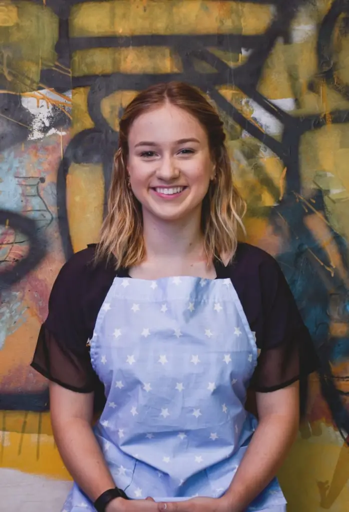

The Chefs
We started Varese as a way to honor our family traditions while pursuing our own passions. In addition to being brother and sister, we're fourth generation chefs with a strong dedication to making the most significant traditions relevant again.
We have spent countless hours in this kitchen developing and perfecting the recipes you see on the menu today. We've also dedicated our time and energy into sourcing the right ingredients and making sure seasonal specialities are available to our patrons.
